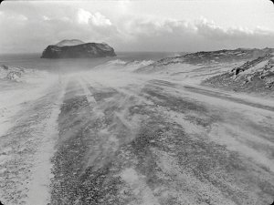

Tremor – Es ist immer Krieg

Annik LeroyBE 2017 – 90 min – Italienisch, Deutsch, Isländisch, Niederländisch, Französisch
Deutsche Premiere
B: Annik Leroy – K+S+T: Julie Morel, Annik Leroy – M: Giacinto Scelsi – Texte: Pier Paolo Pasolini „Profezia“, Ingeborg Bachmann „Malina“, Fernando Nannetti, Barbara Suckfüll – P: Cobra Films, Auguste Orts – V: Auguste Orts
Mit den Stimmen von Ingeborg Bachmann, Alberto Moravia, Pier Paolo Pasolini, Sigmund & Anna Freud
Die Originalstimmen von Pier Paolo Pasolini, Ingeborg Bachmann, Alberto Moravia, Sigmund & Anna Freud in einem kraft- wie kunstvollen Essay zu Gewalt und Krieg. Ruinen, Terrains vagues und das Korn der 16mm-Schwarzweiß-Bilder sind die Schauplätze. Der Titel verdankt sich einem Dialog aus Ingeborg Bachmanns „Malina“.
samstag 7 okt 21.00 uhr filmmuseum münchen
Hier ein Exzerpt aus VERS LA MER,
um einen Eindruck vom Filmschaffen von Annik Leroy zu bekommen.
Annik Leroy * 1953 in Brüssel geboren. Studium an der Ecole Nationale d’Architecture et des Arts Visuels in Brüssel und ist seit 1973 als Filmemacherin und
Photografin tätig. Sie ist Professorin für Dokumentar- und Experimentalfilm an der Hogeschool Sint-Lukas und Professorin für Arts Narratifs am Institut Supérieur Libre d’Arts Plastiques (ERG) in Brüssel. Daneben hat sie zahlreiche Installationen für Kunsträume realisiert. Leroy gehört zu den Hauptvertreterinnen des belgischen Kinos.
Filme In der Dämmerstunde Berlin de l’aube à la nuit 1981 – Vers la mer 1999 – fffff+ppppp 2000 –Cellule 719 2006